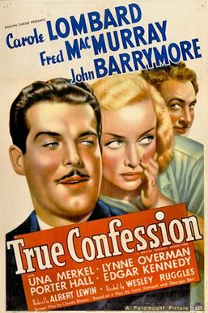

True Confession
Starring: Carole Lombard, Fred MacMurray, John Barrymore
Director: Wesley Ruggles
Writer: Claude Binyon
Producer: Albert Lewin
True Confession is a 1937 American screwball comedy film directed by Wesley Ruggles and starring Carole Lombard, Fred MacMurray, and John Barrymore. It was based on the 1934 play Mon Crime, written by Georges Berr and Louis Verneuil. In 1946 it was remade as Cross My Heart.
Trivia
- Based on Mon crime (1934 play by Georges Berr and Louis Verneuil).
- Hollywood film studios Production Code Administration director Joseph Breen registered a complaint with Paramount Pictures, charging the filmmakers with encouraging a licentious attitude towards the court system.
Previous Showings
7 Runs • 2 Festivals
Original Billings: 1 run (January 2, 1938)
Original Run: January 2, 1938 (Sunday - Tuesday)
All runs on record (7):
- Unverified January 2, 1938 (Sunday - Tuesday)Carole Lombard, Fred MacMurray
- February 17, 1988w/ My Man Godfrey
- October 18 - 19, 1990w/ The Moon's Our Home
- April 30 - May 1, 1994w/ Nothing Sacred
- October 14 - 17, 1995w/ Remember the Night
- March 17 - 19, 2004James Stewart Festival, also Great Detective Series and Classic Hollywood 1934-1938w/ Ruggles of Red Gap
- September 14 - 17, 2019Summer 2019w/ Double Indemnity